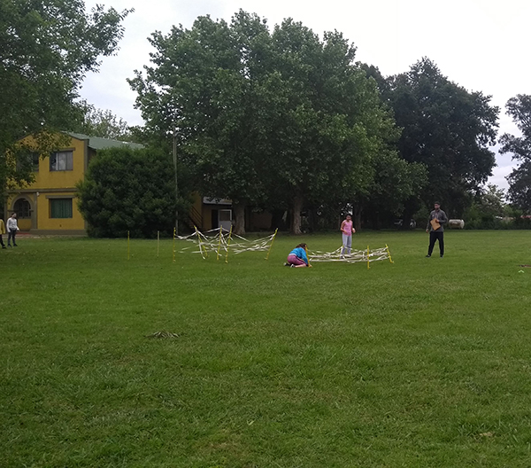
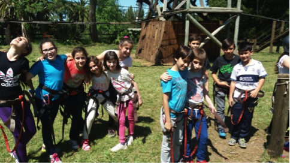
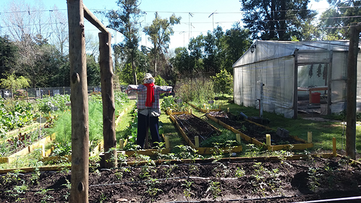
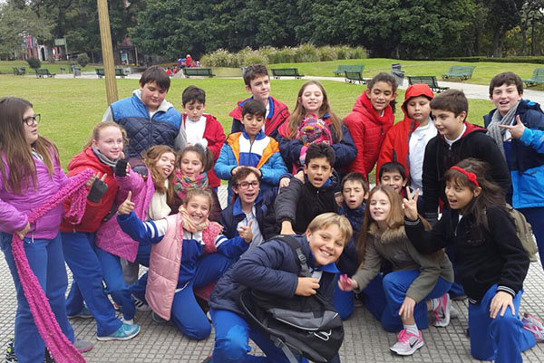
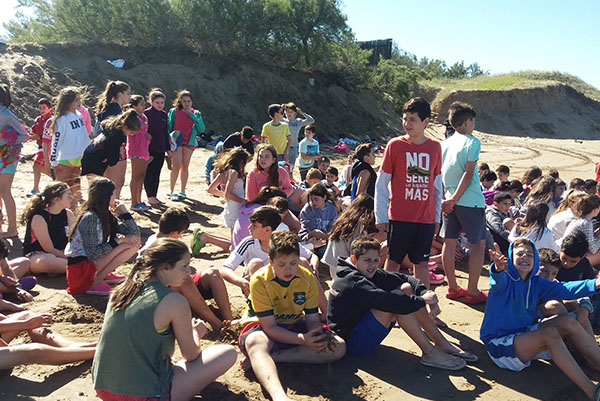
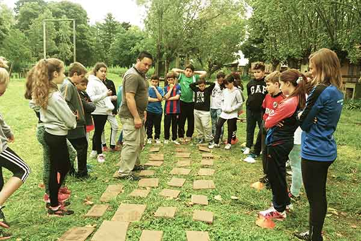
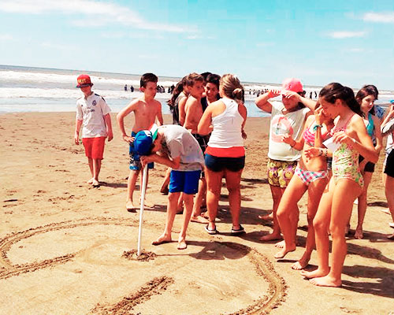
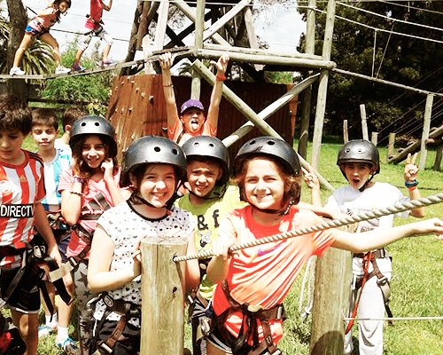
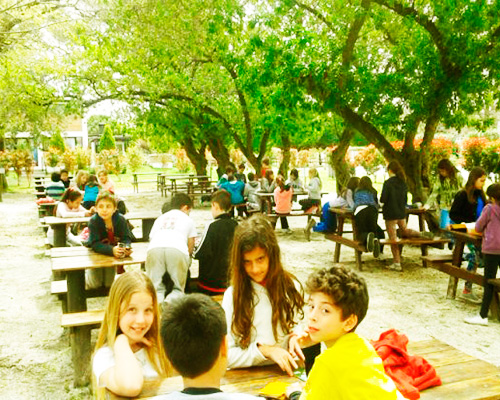

ESCUELA ITALIANA
SALIDAS EDUCATIVAS
Salidas Educativas


JORNADA DEPORTIVA EN EL COLEGIO RAICES
Nivel primario
Les dejamos algunas fotos del encuentro con el Colegio Raices, en el que participaron las alumnas de 4º grado.
Ver más





Proyecto:"Conociendo Buenos Aires para aprender más" 2017
Nivel primario
Los alumnos de 5° año primaria "salieron a estudiar"
Ver más

Campamento de 6° 2016
Nivel primario
Campamento de 6° Estancia el Carmen 2016 Santa Teresita
Ver más





Próximas Salidas
-
Campamentos 2019! ya estan programadas las fechas, enterate todo en la sección de deportes.